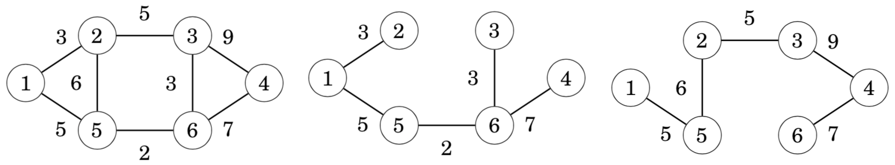
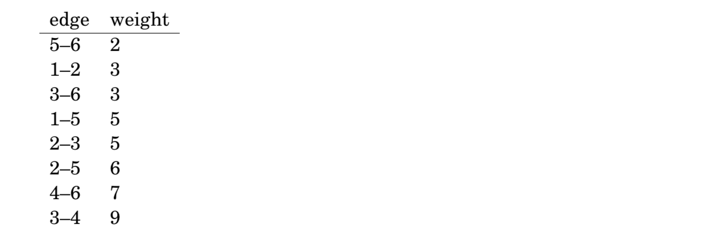
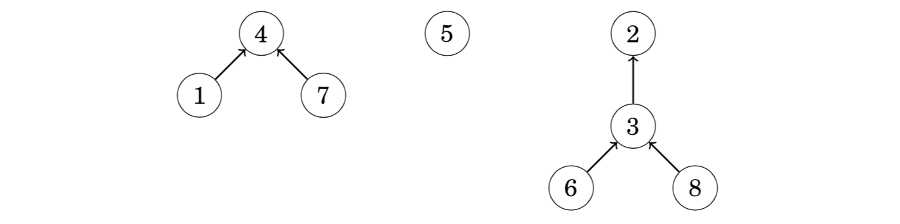
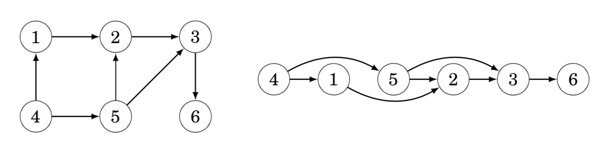
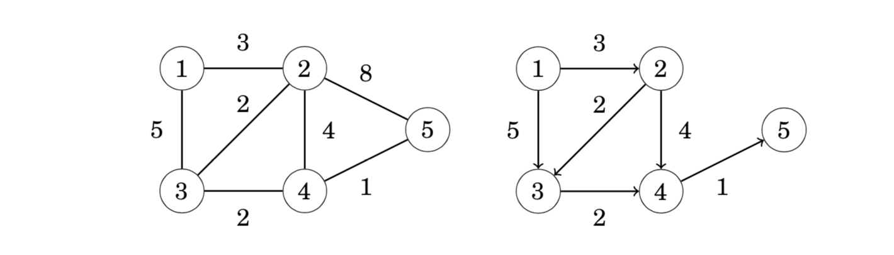
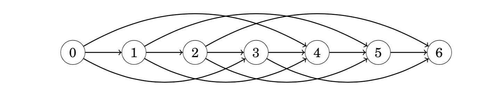
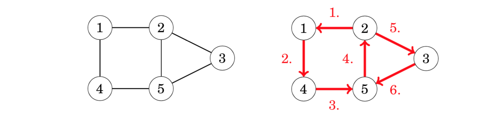
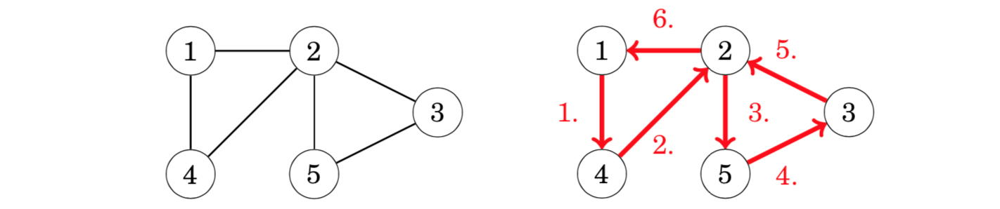
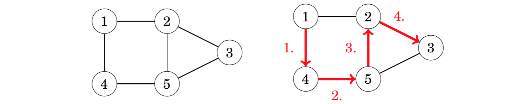

17. graph图论(三)¶
17.1. spanning tree生成树¶
A spanning tree of a graph consists of all nodes of the graph and some of the edges of the graph so that there is a path between any two nodes. Like trees in general, spanning trees are connected(连通的) and acyclic(无环). Usually there are several ways to construct a spanning tree.
A minimum spanning tree(最小生成树) is a spanning tree whose weight is as small as possible.
In a similar way, a maximum spanning tree(最大生成树) is a spanning tree whose weight is as large as possible.

17.1.1. Kruskal’s algorithm¶
In Kruskal’s algorithm, the initial spanning tree only contains the nodes of the graph and does not contain any edges. Then the algorithm goes through the edges ordered by their weights, and always adds an edge to the tree if it does not create a cycle.
The algorithm maintains the components of the tree. Initially, each node of the graph belongs to a separate component. Always when an edge is added to the tree, two components are joined. Finally, all nodes belong to the same component, and a minimum spanning tree has been found.
The first step of the algorithm is to sort the edges in increasing order of their weights. The result is the following list:

After this, the algorithm goes through the list and adds each edge to the tree if it joins two separate components.Initially, each node is in its own component:
The first edge to be added to the tree is the edge 5–6 that creates a component {5,6} by joining the components {5} and {6}.
After this, the edges 1–2, 3–6 and 1–5 are added in a similar way.
!
After those steps, most components have been joined and there are two components in the tree: {1,2,3,5,6} and {4}.
The next edge in the list is the edge 2–3, but it will not be included in the tree, because nodes 2 and 3 are already in the same component. For the same reason, the edge 2–5 will not be included in the tree.
Finally, the edge 4–6 will be included in the tree:
After this, the algorithm will not add any new edges, because the graph is connected and there is a path between any two nodes. The resulting graph is a minimum spanning tree with weight 2+3+3+5+7=20.
Why does this work?
It is a good question why Kruskal’s algorithm works. Why does the greedy strategy guarantee that we will find a minimum spanning tree?
Let us see what happens if the minimum weight edge of the graph is not included in the spanning tree. For example, suppose that a spanning tree for the previous graph would not contain the minimum weight edge 5–6. We do not know the exact structure of such a spanning tree, but in any case it has to contain some edges. Assume that the tree would be as follows:
However, it is not possible that the above tree would be a minimum spanning tree for the graph. The reason for this is that we can remove an edge from the tree and replace it with the minimum weight edge 5–6. This produces a spanning tree whose weight is smaller:
For this reason, it is always optimal to include the minimum weight edge in the tree to produce a minimum spanning tree. Using a similar argument, we can show that it is also optimal to add the next edge in weight order to the tree, and so on. Hence, Kruskal’s algorithm works correctly and always produces a minimum spanning tree.
Implementation
When implementing Kruskal’s algorithm, it is convenient to use the edge list representation of the graph. The first phase of the algorithm sorts the edges in the list in O(mlogm)** time. After this, the second phase of the algorithm builds the minimum spanning tree as follows:
for (...) {
if (!same(a,b)) unite(a,b);
}
We will solve the problem using a union-find structure that implements both functions in **O(log n) **time. Thus, the time complexity of Kruskal’s algorithm will be **O(m log n) **after sorting the edge list.
此处，O(mlogm), O(mlogn)都是对的
//示例代码
#include <iostream>
#include <algorithm>
using namespace std;
const int N = 200010;//SE问题，也可能出现在这里，一般就是边界问题
int n, m;
int p[N];
struct Edge
{
int a, b, w;
bool operator< (const Edge &W)const
{
return w < W.w;
}
}edges[N];
int find(int x)
{
if (p[x] != x) p[x] = find(p[x]);
return p[x];
}
int main()
{
scanf("%d%d", &n, &m);
for (int i = 0; i < m; i++)
{
int a, b, w;
scanf("%d%d%d", &a, &b, &w);
edges[i] = {a, b, w};
}
//直接写kruscal, 不用把他单独包起来了
sort(edges, edges + m);
for (int i = 1; i <= n; i++) p[i] = i;
int res = 0, cnt = 0;
for (int i = 0; i < m; i++)
{
int a = edges[i].a, b = edges[i].b, w = edges[i].w;
a = find(a), b = find(b);
if (a != b)
{
p[a] = b;
res += w;//最小生成树，所有树边的权重之和
cnt++; //当前加了多少条边
}
}
if (cnt < n - 1) puts("impossible");
else printf("%d\n", res);
return 0;
}
17.1.2. Union-find structure并查集¶
A union-find structure maintains a collection of sets. The sets are disjoint, so no element belongs to more than one set. Two O(logn)** time operations are supported: the unite operation joins two sets, and the find operation finds the representative of the set that contains a given element.
structure数据结构
In a union-find structure, one element in each set is the representative of the set, and there is a chain from any other element of the set to the representative. For example, assume that the sets are {1,4,7}, {5} and {2,3,6,8}:

In this case the representatives of the sets are 4, 5 and 2. We can find the representative of any element by following the chain that begins at the element. For example, the element 2 is the representative for the element 6, because we follow the chain 6 → 3 → 2. Two elements belong to the same set exactly when their representatives are the same.
Two sets can be joined by connecting the representative of one set to the representative of the other set. For example, the sets {1,4,7} and {2,3,6,8} can be joined as follows:
The resulting set contains the elements {1,2,3,4,6,7,8}. From this on, the element 2 is the representative for the entire set and the old representative 4 points to the element 2.
The efficiency of the union-find structure depends on how the sets are joined. It turns out that we can follow a simple strategy: always connect the representa- tive of the smaller set to the representative of the larger set (or if the sets are of equal size, we can make an arbitrary choice). Using this strategy, the length of any chain will be O(logn)**, so we can find the representative of any element efficiently by following the corresponding chain.
//初始化
for (int i = 1; i <= n; i++) p[i] = i;
//合并
p[find(a)] = find(b);
//或者
int pa = find(a), pb = find(b);
if (pa != pb) p[pa] = pb;
int find(int x) //返回x的祖宗结点+路径压缩
{
if (p[x] != x) p[x] = find(p[x]);
return p[x];
}
//另外一份模板
//the array link contains for each element the next element in the chain or the element itself if it is a representative, and the array size indicates for each representative the size of the corresponding set.
for (int i = 1; i <= n; i++) link[i] = i;
for (int i = 1; i <= n; i++) size[i] = 1;
void unite(int a, int b) {
a = find(a);
b = find(b);
if (size[a] < size[b]) swap(a,b);
size[a] += size[b];
link[b] = a;
}
17.1.3. Prim’s algorithm¶
Prim’s algorithm is an alternative method for finding a minimum spanning tree. The algorithm first adds an arbitrary node to the tree. After this, the algorithm always chooses a minimum-weight edge that adds a new node to the tree. Finally, all nodes have been added to the tree and a minimum spanning tree has been found.
Prim’s algorithm resembles Dijkstra’s algorithm. The difference is that Dijkstra’s algorithm always selects an edge whose distance from the starting node is minimum, but Prim’s algorithm simply selects the minimum weight edge that adds a new node to the tree.
Let us consider how Prim’s algorithm works in the following graph:
Initially, there are no edges between the nodes:

An arbitrary node can be the starting node, so let us choose node 1. First, we add node 2 that is connected by an edge of weight 3:
After this, there are two edges with weight 5, so we can add either node 3 or node 5 to the tree. Let us add node 3 first:
The process continues until all nodes have been included in the tree:
Implementation
Like Dijkstra’s algorithm, Prim’s algorithm can be efficiently implemented using a priority queue. The priority queue should contain all nodes that can be connected to the current component using a single edge, in increasing order of the weights of the corresponding edges.
The time complexity of Prim’s algorithm is O(n+mlogm)** that equals the time complexity of Dijkstra’s algorithm. In practice, Prim’s and Kruskal’s algorithms are both efficient, and the choice of the algorithm is a matter of taste. Still, most competitive programmers use Kruskal’s algorithm.
//示例代码
#include <cstring>
#include <iostream>
#include <algorithm>
using namespace std;
const int N = 510, INF = 0x3f3f3f3f;
int n, m;
int g[N][N];
int dist[N];
bool st[N];
int prim()
{
memset(dist, 0x3f, sizeof dist);
int res = 0;
for (int i = 0; i < n; i++)
{
int t = -1;
for (int j = 1; j <= n; j++)
if (!st[j] && (t == -1 || dist[t] > dist[j]))
t = j;
if (i && dist[t] == INF) return INF;
if (i) res += dist[t];
for (int j = 1; j <= n; j++) dist[j] = min(dist[j], g[t][j]);
st[t] = true;
}
return res;
}
int main()
{
scanf("%d%d", &n, &m);
memset(g, 0x3f, sizeof g);
while (m--)
{
int a, b, c;
scanf("%d%d%d", &a, &b, &c);
g[a][b] = g[b][a] = min(g[a][b], c); //无向图是一种特殊的有向图
}
int t = prim();
if (t == INF) puts("impossible"); //当前到大距离最小的点的距离都是INF，那就说明图是不连通的
else printf("%d\n", t);
return 0;
}
17.2. Directed graphs有向图¶
概念：
Acyclic graphs: There are no cycles in the graph, so there is no path from any node to itself.
Successor graphs: The outdegree of each node is 1, so each node has a unique successor.
Directed acyclic graphs are sometimes called DAGs.(DAG, 有向无环图)
17.2.1. Topological sorting拓扑序¶
A topological sort is an ordering of the nodes of a directed graph such that if there is a path from node a to node b, then node a appears before node b in the ordering. For example, for the graph one topological sort is [4,1,5,2,3,6]:

An acyclic graph always has a topological sort. However, if the graph contains a cycle, it is not possible to form a topological sort, because no node of the cycle can appear before the other nodes of the cycle in the ordering. It turns out that depth-first search can be used to both check if a directed graph contains a cycle and, if it does not contain a cycle, to construct a topological sort.
topsort就是有向图的宽度优先遍历的应用 拓扑序，不唯一。如要要字典序最小的拓扑序，在遍历入度为0的点的时候，从1开始遍历，并入队
17.2.2. Dynamic programming¶
If a directed graph is acyclic, dynamic programming can be applied to it. For example, we can efficiently solve the following problems concerning paths from a starting node to an ending node:
how many different paths are there?
what is the shortest/longest path?
what is the minimum/maximum number of edges in a path?
which nodes certainly appear in any path?
Counting the number of paths(统计方案数)(应用)
As an example, let us calculate the number of paths from node 1 to node 6 in the following graph:
There are a total of three such paths:
• 1→2→3→6 • 1→4→5→2→3→6 • 1→4→5→3→6
Let paths(x) denote the number of paths from node 1 to node x. As a base case, paths(1) = 1. Then, to calculate other values of paths(x), we may use the recursion where a1,a2,…,ak are the nodes from which there is an edge to x. Since the graph is acyclic, the values of paths(x) can be calculated in the order of a topological sort. A topological sort for the above graph is as follows:
For example, to calculate the value of paths(3), we can use the formula paths(2) + paths(5), because there are edges from nodes 2 and 5 to node 3. Since paths(2) = 2 and paths(5) = 1, we conclude that paths(3) = 3.
Extending Dijkstra’s algorithm(对dijkstra得到的最短路径，使用dp)(应用)
A by-product of Dijkstra’s algorithm is a directed, acyclic graph that indicates for each node of the original graph the possible ways to reach the node using a shortest path from the starting node. Dynamic programming can be applied to that graph. For example, in the graph the shortest paths from node 1 may use the following edges:

Now we can, for example, calculate the number of shortest paths from node 1 to node 5 using dynamic programming:
Representing problems as graphs(背包问题转化到图上)(应用)
Actually, any dynamic programming problem can be represented as a directed, acyclic graph. In such a graph, each node corresponds to a dynamic programming state and the edges indicate how the states depend on each other.
As an example, consider the problem of forming a sum of money n using coins {c1,c2,…,ck}. In this problem, we can construct a graph where each node corresponds to a sum of money, and the edges show how the coins can be chosen. For example, for coins {1, 3, 4} and n = 6, the graph is as follows:

Using this representation, the shortest path from node 0 to node n corresponds to a solution with the minimum number of coins, and the total number of paths from node 0 to node n equals the total number of solutions.
17.2.3. Successor paths后继路径¶
这里介绍successor paths是因为它引出了倍增的应用，需要学习倍增。noip普及组中，还没遇到successor paths的题目。
In successor graphs, the outdegree of each node is 1, i.e., exactly one edge starts at each node. A successor graph consists of one or more components, each of which contains one cycle and some paths that lead to it.
Successor graphs are sometimes called functional graphs. The reason for this is that any successor graph corresponds to a function that defines the edges of the graph. The parameter for the function is a node of the graph, and the function gives the successor of that node.
Since each node of a successor graph has a unique successor, we can also define a function succ(x,k) that gives the node that we will reach if we begin at node x and walk k steps forward. For example, in the above graph succ(4, 6) = 2, because we will reach node 2 by walking 6 steps from node 4:
A straightforward way to calculate a value of succ(x,k) is to start at node x and walk k steps forward, which takes O(k) time. However, using preprocessing, any value of succ(x, k) can be calculated in only O(log k) time.
The idea is to precalculate all values of succ(x,k) where k is a power of two and at most u, where u is the maximum number of steps we will ever walk. This can be efficiently done, because we can use the following recursion:
Precalculating the values takes O(nlogu)** time, because O(logu)** values are calculated for each node. In the above graph, the first values are as follows:

After this, any value of succ(x, k) can be calculated by presenting the number of steps k as a sum of powers of two. For example, if we want to calculate the value of succ(x, 11), we first form the representation 11 = 8 + 2 + 1. Using that,
Such a representation always consists of O(log k) parts, so calculating a value of succ(x, k) takes O(log k) time.
17.3. Paths and circuits路径和回路¶
An Eulerian path is a path that goes through each edge exactly once.
A Hamiltonian path is a path that visits each node exactly once.
While Eulerian and Hamiltonian paths look like similar concepts at first glance, the computational problems related to them are very different. It turns out that there is a simple rule that determines whether a graph contains an Eulerian path, and there is also an efficient algorithm to find such a path if it exists. On the contrary, checking the existence of a Hamiltonian path is a NP-hard problem, and no efficient algorithm is known for solving the problem.
17.3.1. Eulerian paths欧拉路径，一笔画问题¶
L. Euler studied such paths in 1736 when he solved the famous Königsberg bridge problem. This was the birth of graph theory.(七座桥问题)
An Eulerian path(欧拉路径) is a path that goes exactly once through each edge of the graph. For example, the graph has an Eulerian path from node 2 to node 5:

An Eulerian circuit(欧拉回路) is an Eulerian path that starts and ends at the same node. For example, the graph has an Eulerian circuit that starts and ends at node 1:

Existence
The existence of Eulerian paths and circuits depends on the degrees of the nodes. First, an undirected graph has an Eulerian path exactly when all the edges belong to the same connected component and
the degree of each node is even(所有点的度数是偶数)(欧拉回路)
the degree of exactly two nodes is odd, and the degree of all other nodes is even.(有两个点度数是奇数，其他所有点的度数是偶数)(欧拉路径)(奇数点就是起点)
以上两点满足其一
In the first case, each Eulerian path is also an Eulerian circuit. In the second case, the odd-degree nodes are the starting and ending nodes of an Eulerian path which is not an Eulerian circuit.
nodes 1, 3 and 4 have a degree of 2, and nodes 2 and 5 have a degree of 3. Exactly two nodes have an odd degree, so there is an Eulerian path between nodes 2 and 5, but the graph does not contain an Eulerian circuit.
In a directed graph, we focus on indegrees and outdegrees of the nodes. A directed graph contains an Eulerian path exactly when all the edges belong to the same connected component and
in each node, the indegree equals the outdegree(所有点出度和入度相等)(欧拉回路)
in one node, the indegree is one larger than the outdegree, in another node, the outdegree is one larger than the indegree, and in all other nodes, the indegree equals the outdegree.(一个点入度比出点大1，一个点出点比入度大1，其他点入度和出度相等)(欧拉路径)
以上两点满足其一
In the first case, each Eulerian path is also an Eulerian circuit, and in the second case, the graph contains an Eulerian path that begins at the node whose outdegree is larger and ends at the node whose indegree is larger.
nodes 1, 3 and 4 have both indegree 1 and outdegree 1, node 2 has indegree 1 and outdegree 2, and node 5 has indegree 2 and outdegree 1. Hence, the graph contains an Eulerian path from node 2 to node 5:
//示例代码，一笔画问题
#include <bits/stdc++.h>
using namespace std;
const int N = 110;
int g[N][N], in[N];
int n, m;
vector<int> path;
bool vis[N];
int circuit = 0;
void dfs(int u)
{
path.push_back(u);
for (int j = 1; j <= n; j++)
if (g[u][j]){
g[u][j] = g[j][u] = 0; //这条边画掉
dfs(j);
break;
}
}
int main()
{
cin >> n >> m;
for (int i = 0; i < m; i++){
int a, b;
cin >> a >> b;
g[a][b] = g[b][a] = 1;
in[a]++; in[b]++;
}
int st = 1;
for (int i = 1; i <= n; i++){
if (in[i] & 1) {st = i;break;}
}
dfs(st);
for (int i = 0; i < (int)path.size(); i++) printf("%d ", path[i]);
puts("");
return 0;
}
17.3.2. Hamiltonian paths哈密尔顿路径¶
A Hamiltonian path is a path that visits each node of the graph exactly once. For example, the graph contains a Hamiltonian path from node 1 to node 3:

If a Hamiltonian path begins and ends at the same node, it is called a Hamil- tonian circuit. The graph above also has an Hamiltonian circuit that begins and ends at node 1:
Construction
Since there is no efficient way to check if a Hamiltonian path exists, it is clear that there is also no method to efficiently construct the path, because otherwise we could just try to construct the path and see whether it exists.
A simple way to search for a Hamiltonian path is to use a backtracking algorithm that goes through all possible ways to construct the path. The time complexity of such an algorithm is at least O(n!), because there are n! different ways to choose the order of n nodes.(使用complete search + backtracking直接搜)
A more efficient solution is based on dynamic programming . The idea is to calculate values of a function possible(S,x), where S is a subset of nodes and x is one of the nodes. The function indicates whether there is a Hamiltonian path that visits the nodes of S and ends at node x. It is possible to implement this solution in O(2^n * n^2) time.(使用状压dp)
//示例代码，《进阶指南》P7，求起点0到终点n-1的最短Hamilton路径
//使用了状压dp
int f[1 << 20][20];
int hamilton(int n, int weight[20][20]){
memset(f, 0x3f, sizeof f);
f[1][0] = 0;
for (int i = 1; i < 1 << n; i++)
for (int j = 0; j < n; j++)
if (i >> j & 1)
for (int k = 0; k < n; k++)
if ((i^1<<j) >> k & 1)
f[i][j] = min(f[i][j], f[i^1<<j][k] + weight[k][j]);
return f[(1<<n) - 1][n - 1];
}